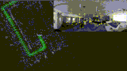

                        <!DOCTYPE html>
<!-- saved from url=(0034)http://www.cs.toronto.edu/~slwang/ -->
<html><div class="oneNoteWebClipperIsInstalledOnThisBrowser" style="display: none;"></div><head><meta http-equiv="Content-Type" content="text/html; charset=UTF-8">

<title>Ken Sakurada</title>
<link href="./src/gly.css" rel="stylesheet" type="text/css">

<script type="text/javascript" async="" src="./src/ga.js"></script><script type="text/javascript" async="" src="./src/ga(1).js"></script><script type="text/javascript">

  var _gaq = _gaq || [];
  _gaq.push(['_setAccount', 'UA-543380-2']);
  _gaq.push(['_trackPageview']);

  (function() {
    var ga = document.createElement('script'); ga.type = 'text/javascript'; ga.async = true;
    ga.src = ('https:' == document.location.protocol ? 'https://ssl' : 'http://www') + '.google-analytics.com/ga.js';
    var s = document.getElementsByTagName('script')[0]; s.parentNode.insertBefore(ga, s);
  })();

</script>
</head>

<body>


<div class="container">
  <div style="text-align: right;">
    Japanese / <a href="./index.html">English</a>
  </div>
    <table width="95%" border="0" align="center">
      <tbody><tr>
        <td width="20%"><div align="center"></div></td>
        <td width="80%"><div align="center">
          <table width="110%" border="0">
            <tbody><tr>
            <td width="10%" height="0" valign="top"></td>
            <td width="81%" valign="top">
              <table width="79%" border="0" align="left">
                <tbody><tr> 
                  <td align="left"><span class="textpageheader">櫻田 健 </span> (<a href="https://twitter.com/sakuDken"> @sakuDken  </a> ) </td>
                </tr>
              </tbody></table></td>          
            </tr>
          <tr>
            <td width="10%" height="50" valign="center"> <br>
              <p style="line-height:200%">
              <td width="91%" valign="top"> <a href="https://www.airc.aist.go.jp/">  国立研究開発法人 産業技術総合研究所 </a> <a href="https://www.airc.aist.go.jp/"> 人工知能研究センター </a> <br> 主任研究員  <br> 
              </p>
                <p style="line-height:120%">
                <a href="https://dena.com/jp/"> DeNA </a> <br>コンピュータビジョン技術フェロー <br>
              </p>
              <p style="line-height:120%">
                <a href="https://3dvision.connpass.com/"> 3D勉強会@関東 </a> <br>主催者 (<a href="https://twitter.com/3dcvtech"> @3dcvtech  </a> ) <br>
              </p>
                </tr>
            <tr>
            <td width="9%" height="20" valign="top"> 住所:</td>
            <td width="91%" valign="top">
              〒135-0064 &nbsp 東京都江東区青海2-4-7 臨海副都心センター 別館 <br> </td>
          </tr>
          <tr>
            <td height="1">  Email:</td>
            <td>sakurada.aist at gmail.com </td>
          </tr>
          <tr>
            <td width="10%" height="10"> </a></td>
            <td ><a href="./document/CV_sakurada.pdf">[Curriculum Vitae]</a></td>
            <td> </td>
          </tr>
         </tbody></table>
        </div></td>
        <td width="10%"><div align="center">
          <table width="100%" border="0">
          </table>
        </div></td>
      </tr>
  </tbody></table>
<hr>


<p class="textsectionheader2">研究分野</p>
<hr>
コンピュータビジョン，ロボティクス (SLAM，4Dモデリング)

<p class="textsectionheader2">最新のお知らせ</p>
<hr>
<dl class=" ">
<dt><span>2019/07/15 </span>&nbsp;&nbsp; ACM Multimedia 2019 Open Source Software Competition (OSSC) に論文が採択されました <a href="https://drive.google.com/open?id=1IJJbaiyYcmPPJ33C4HQS-k9KS3c6cqgo">[Preprint]</a></dt>
<dt><span>2019/05/20 </span>&nbsp;&nbsp; Visual SLAMのオープンソース<a href="https://github.com/xdspacelab/openvslam"><i>OpenVSLAM</i></a>を公開しました  <a href="https://github.com/xdspacelab/openvslam">[Github]</a></dt>
<dt><span>2019/02/25 </span>&nbsp;&nbsp; CVPR 2019に論文が採択されました <a href="https://arxiv.org/abs/1812.01285">[arXiv]</a></dt>
<dt><span>2018/09/27 </span>&nbsp;&nbsp; ACCV2018に論文が採択されました．<a href="https://arxiv.org/abs/1810.11856">[arXiv]</a> </dt> 
<dt><span>2018/08/08 </span>&nbsp;&nbsp; 指導学生の角倉慎弥君がMIRU2018で<a href="https://sites.google.com/view/miru2018sapporo/%E3%83%9B%E3%83%BC%E3%83%A0/%E8%A1%A8%E5%BD%B0?authuser=0">MIRUインタラクティブ発表賞</a>を受賞しました．</dt>
<dt><span>2018/05/11 </span>&nbsp;&nbsp; 指導学生の角倉慎弥君が第212回CVIM研究会で<a href="http://cvim.ipsj.or.jp/index.php?id=award_winner">卒論セッション最優秀賞</a>を受賞しました．</dt>
<dt><span>2018/04/01 </span>&nbsp;&nbsp; 国立研究開発法人 産業技術総合研究所 人工知能研究センター 地理情報科学研究チームの主任研究員に着任しました。</dt>
<dt><span>2018/02/02 </span>&nbsp;&nbsp; <a href="http://www.inoue-zaidan.or.jp/b-01.html?eid=00033">第34回井上研究奨励賞</a>を受賞しました。</dt>
<dt><span>2017/08/16 </span>&nbsp;&nbsp; Remote Sensingジャーナルに論文が採択されました <a href="http://www.mdpi.com/2072-4292/9/8/851">[Paper]</a><a href="https://arxiv.org/abs/1708.05514">[arXiv]</a><a href="https://github.com/mfxox/ILCC">[GitHub]</a></dt>
<dt><span>2017/07/10 </span>&nbsp;&nbsp; LiDAR-カメラキャリブレーションソフト（ILCC）を公開しました <a href="https://github.com/mfxox/ILCC">[GitHub]</a></dt>
<dt><span>2017/07/10 </span>&nbsp;&nbsp; ITSS名古屋チャプタ 2017年度 第1回講演会で講演しました <a href="https://www.slideshare.net/KenSakurada/d-77534049">[講演資料]</a> </dt>
<dt><span>2017/04/28 </span>&nbsp;&nbsp; CVPR Workshop Earth Vision 2017 Workshopに論文が採択されました <a href="./document/cvprw2017.pdf">[Paper]</a></dt>
<dt><span>2017/03/16 </span>&nbsp;&nbsp; <a href="https://www.ipsj.or.jp/award/yamashita2016.html">山下記念研究賞</a>を受賞しました </dt>
<dt><span>2017/02/13 </span>&nbsp;&nbsp; MVA2017に口頭発表論文として採択されました</a> <a href="./document/mva2017.pdf">[Paper]</a></dt>
<dt><span>2017/02/08 </span>&nbsp;&nbsp; Computer Vision and Image Understanding （CVIU）ジャーナルに論文が採択されました <a href="http://www.sciencedirect.com/science/article/pii/S1077314217300280">[Paper]</a> <a href="./document/Temporal City Modeling using Street Level Imagery.pdf">[Pre-print]</a></dt>
<div onclick="obj=document.getElementById('open').style; obj.display=(obj.display=='none')?'block':'none';">
<a style="cursor:pointer;"><p align="right">すべて表示</p></a>
<div id="open" style="display:none;clear:both;">
<dt><span>2016/12/24 </span>&nbsp;&nbsp; 中部大学の大学院講義で講演しました <a href="http://www.slideshare.net/KenSakurada/20161025">[講演資料]</a></dt>
<dt><span>2016/11/22 </span>&nbsp;&nbsp; Remote Sensingジャーナルに論文が採択されました <a href="http://www.mdpi.com/2072-4292/8/11/967">[Paper]</a> </dt>
<dt><span>2016/10/25 </span>&nbsp;&nbsp; 産総研人工知能セミナーで講演しました <a href="http://www.slideshare.net/KenSakurada/20161025">[講演資料]</a> </dt>
<dt><span>2016/04/01 </span>&nbsp;&nbsp; 産業技術総合研究所人工知能センターの客員研究員に着任しました</dt>
<dt><span>2016/04/01 </span>&nbsp;&nbsp; 名古屋大工学研究科計算理工学専攻の助教に着任しました</dt>
<dt><span>2016/03/25 </span>&nbsp;&nbsp; Computer Vision and Image Understanding （CVIU）ジャーナルに論文が採択されました <a href="http://www.sciencedirect.com/science/article/pii/S1077314216000710">[Paper]</a> </dt>

</div>
</dl>


<p class="textsectionheader2">主な研究プロジェクト</p><hr>
<table width="100%" border="0">
  <tbody>

    <tr>
      <td width="26%"></td>
      <td width="4%"> </td>
      <td width="68%"><p class="papertext"><strong>
          OpenVSLAM: a Versatile Visual SLAM Framework </strong><br>
          Shinya Sumikura, Mikiya Shibuya, <strong><a href="https://kensakurada.github.io/index_ja.html">Ken Sakurada</a></strong><br>
          <a href="https://drive.google.com/open?id=1IJJbaiyYcmPPJ33C4HQS-k9KS3c6cqgo">[Preprint]</a> <a href="https://github.com/xdspacelab/openvslam">[Github]</a> </p></td>
      <td>&nbsp;</td>
    </tr>

    <tr>
      <td width="26%"></td>
      <td width="4%"> </td>
      <td width="68%"><p class="papertext"><strong>
        MeshDepth: Disconnected Mesh-based Deep Depth Prediction </strong><br>
        Masaya Kaneko, <strong><a href="https://kensakurada.github.io/index_ja.html">Ken Sakurada</a></strong>, Kiyoharu Aizawa<br>
        arXiv<br>
              <a href="https://arxiv.org/abs/1905.01312">[arXiv]</a> <a href="https://meshdepth.github.io/">[Project]</a> [Code] [Dataset] </p></td>
      <td>&nbsp;</td>
    </tr>

    <tr>
      <td width="26%"></td>
      <td width="4%"> </td>
      <td width="68%"><p class="papertext"><strong>
        Rare Event Detection using Disentangled Representation Learning </strong><br>
        Ryuhei Hamaguchi, <strong><a href="https://kensakurada.github.io/index_ja.html">Ken Sakurada</a></strong>, Ryosuke Nakamura <br>
        CVPR 2019<br>
              <a href="https://arxiv.org/abs/1812.01285">[arXiv]</a> [Code] [Dataset]</p></td>
      <td>&nbsp;</td>
    </tr>

    <tr>
      <td width="26%"></td>
      <td width="4%"> </td>
      <td width="68%"><p class="papertext"><strong>
        Weakly Supervised Silhouette-based Semantic Change Detection </strong><br>
        <strong><a href="https://kensakurada.github.io/index_ja.html">Ken Sakurada</a></strong> <br>
        arXiv<br>
              <a href="https://arxiv.org/abs/1811.11985">[arXiv]</a> [Project] [Code] [Dataset] </p></td>
      <td>&nbsp;</td>
    </tr>


    <tr>
      <td width="26%"></td>
      <td width="4%"> </td>
      <td width="68%"><p class="papertext"><strong>
        Scale Estimation of Monocular SfM for a Multi-modal Stereo Camera</strong><br>
        Shinya Sumikura, <strong><a href="https://kensakurada.github.io/index_ja.html">Ken Sakurada</a></strong> Nobuo Kawaguchi and Ryosuke Nakamura<br>
        ACCV 2018<br>
              <a href="https://arxiv.org/abs/1810.11856">[arXiv]</a><a href="https://t.co/gxYp2SIWl7">[Movie]</a> </p></td>
      <td>&nbsp;</td>
    </tr>

    
    <tr>
      <td width="26%"></td>
      <td width="4%"> </td>
      <td width="68%"><p class="papertext"><strong>Reflectance Intensity Assisted Automatic and Accurate Extrinsic Calibration of 3D LiDAR and Panoramic Camera Using a Printed Chessboard</strong><br>
        Weimin Wang, <strong><a href="https://kensakurada.github.io/index_ja.html">Ken Sakurada</a></strong> and Nobuo Kawaguchi<br>
        Remote Sensing 2017, 9(8)<br>
              <a href="http://www.mdpi.com/2072-4292/9/8/851">[Paper]</a><a href="https://arxiv.org/abs/1708.05514">[arXiv]</a><a href="https://github.com/mfxox/ILCC">[GitHub]</a> </p></td>
      <td>&nbsp;</td>
    </tr>
  
    <tr>
    <td width="26%"></td>
    <td width="4%"> </td>
    <td width="68%"><p class="papertext"><strong>Filmy Cloud Removal on Satellite Imagery with Multispectral Conditional Generative Adversarial Nets</strong><br>
      Kenji Enomoto, <strong><a href="https://kensakurada.github.io/index_ja.html">Ken Sakurada</a></strong>, Weimin Wang, Hiroshi Fukui, Masashi Matsuoka, Ryosuke Nakamura and Nobuo Kawaguchi<br>
      Conference on Computer Vision and Pattern Recognition Workshop (CVPRW) EARTHVISION 2017<br>
            <a href="./document/cvprw2017.pdf">[Paper]</a> </p></td>
    <td>&nbsp;</td>
  </tr>

    <tr>
    <td width="26%"></td>
    <td width="4%"> </td>
    <td width="68%"><p class="papertext"><strong>Damage Detection from Aerial Images via Convolutional Neural Networks</strong><br>
      Aito Fujita, <strong><a href="https://kensakurada.github.io/index_ja.html">Ken Sakurada</a></strong>, Tomoyuki Imaizumi, Riho Ito, Shuhei Hikosaka, Ryosuke Nakamura<br>
      IAPR International Conference on Machine Vision and Applications (MVA) 2017<br>
            <a href="./document/mva2017.pdf">[Paper]</a> </p></td>
    <td>&nbsp;</td>
  </tr>

    <tr>
    <td width="26%"></td>
    <td width="4%"> </td>
    <td width="68%"><p class="papertext"><strong>Incremental and Enhanced Scanline-Based Segmentation Method for Surface Reconstruction of Sparse LiDAR Data</strong><br>
      Weimin Wang, <strong><a href="https://kensakurada.github.io/index_ja.html">Ken Sakurada</a></strong> and Nobuo Kawaguchi<br>
      Remote Sensing 2016, 8(11)<br>
            <a href="http://www.mdpi.com/2072-4292/8/11/967">[Paper]</a> <a href="https://scholar.googleusercontent.com/scholar.bib?q=info:QwGNhJoGCgQJ:scholar.google.com/&output=citation&scisig=AAGBfm0AAAAAWE6-x1D16Ln6BvBc9Jc9xmKkvYQpOD5Q&scisf=4&ct=citation&cd=-1&hl=ja">[Bibtex(BIB)]</a></p></td>
    <td>&nbsp;</td>
  </tr>

    <tr>
    <td width="26%"></td>
    <td width="4%"> </td>
    <td width="68%"><p class="papertext"><strong>Change Detection from a Street Image Pair using CNN Features and Superpixel Segmentation</strong><br>
      <strong><a href="https://kensakurada.github.io/index_ja.html">Ken Sakurada</a></strong> and Takayuki Okatani</a><br>
      BMVC, 2015<br>
            <a href="./document/71-Sakurada-BMVC15.pdf">[Paper]</a> <a href="./document/71-Sakurada-BMVC15_supplementary.pdf">[Supplementary]</a> <a href="https://scholar.googleusercontent.com/scholar.bib?q=info:3Yf83QjLJYQJ:scholar.google.com/&output=citation&scisig=AAGBfm0AAAAAWE9oQEcyZoj6583aghm9s-icM7N6D7OJ&scisf=4&ct=citation&cd=-1&hl=ja">[Bibtex(BIB)]</a>
            <a href="http://www.vision.is.tohoku.ac.jp/us/research/4d_city_modeling/pano_cd_dataset/">[Dataset]</p></td>
    <td>&nbsp;</td>
  </tr>

    <tr>
    <td width="26%"></td>
    <td width="4%"> </td>
    <td width="68%"><p class="papertext"><strong>Massive City-scale Surface Condition Analysis using Ground and Aerial Imagery</strong><br>
      <strong><a href="http://www.ucl.nuee.nagoya-u.ac.jp/~sakurada/">Ken Sakurada</a></strong>,  Takayuki Okatani and <a href="http://www.cs.cmu.edu/~kkitani/">Kris M. Kiatani</a><br>
      ACCV, 2014 (Oral), <strong>"Best Application Paper Honorable Mention Award"</strong> <br>
            <a href="./document/68-Sakurada-ACCV14.pdf">[Paper]</a> <a href="https://scholar.googleusercontent.com/scholar.bib?q=info:3Yf83QjLJYQJ:scholar.google.com/&output=citation&scisig=AAGBfm0AAAAAWE9oQEcyZoj6583aghm9s-icM7N6D7OJ&scisf=4&ct=citation&cd=-1&hl=ja">[Bibtex(BIB)]</a></p></td>
    <td>&nbsp;</td>
  </tr>

    <tr>
    <td width="26%"></td>
    <td width="4%"> </td>
    <td width="68%"><p class="papertext"><strong>Detecting Changes in 3D Structure of a Scene from Multi-view Images Captured by a Vehicle-mounted Camera</strong><br>
      <strong><a href="http://www.ucl.nuee.nagoya-u.ac.jp/~sakurada/">Ken Sakurada</a></strong>,  Takayuki Okatani and Koichiro Deguchi</a><br>
      CVPR, 2013 <br>
            <a href="./document/66-Sakurada-CVPR13.pdf">[Paper]</a> <a href="https://scholar.googleusercontent.com/scholar.bib?q=info:fMAo1Gq_sHAJ:scholar.google.com/&output=citation&scisig=AAGBfm0AAAAAWE9qPUuNT2IanI080U_NtZkoAXaDSmqZ&scisf=4&ct=citation&cd=-1&hl=ja">[Bibtex(BIB)]</a>
            <a href="http://www.vision.is.tohoku.ac.jp/us/research/4d_city_modeling/detecting-structural-scene-changes/">[Project]</a>
            <a href="http://www.vision.is.tohoku.ac.jp/us/research/4d_city_modeling/chg_dataset/">[Dataset]</a></p></td>

    <td>&nbsp;</td>
  </tr>


 
</tbody></table> 
<br>


<p class="textsectionheader2">主な論文リスト</p>
<hr>
学術雑誌（査読あり）
<ul>
<li>Weimin Wang, <strong><a href="https://kensakurada.github.io/index_ja.html">Ken Sakurada</a></strong> and Nobuo Kawaguchi，<br>
  <strong>Reflectance Intensity Assisted Automatic and Accurate Extrinsic Calibration of 3D LiDAR and Panoramic Camera Using a Printed Chessboard</strong>，
    <br>Remote Sensing 2017, 9(8)</li> <a href="http://www.mdpi.com/2072-4292/9/8/851">[Paper]</a><a href="https://arxiv.org/abs/1708.05514">[arXiv]</a><a href="https://github.com/mfxox/ILCC">[GitHub]</a>
</li>

<li><strong><a href="https://kensakurada.github.io/index_ja.html">Ken Sakurada</a></strong>, Daiki Tetsuka and Takayuki Okatani，<br>
<strong>Temporal city modeling using street level imagery</strong>，
      <br>Computer Vision and Image Understanding(CVIU) </li> <a href="http://www.sciencedirect.com/science/article/pii/S1077314217300280">[Paper]</a> <a href="./document/Temporal City Modeling using Street Level Imagery.pdf">[Pre-print]</a> 
</li>
<li>Weimin Wang, <strong><a href="https://kensakurada.github.io/index_ja.html">Ken Sakurada</a></strong> and Nobuo Kawaguchi，<br>
<strong>Incremental and Enhanced Scanline-Based Segmentation Method for Surface Reconstruction of Sparse LiDAR Data</strong>，
      <br>Remote Sensing 2016, 8(11)</li> <a href="http://www.mdpi.com/2072-4292/8/11/967">[Paper]</a> 
</li>

<li><strong><a href="https://kensakurada.github.io/index_ja.html">Ken Sakurada</a></strong> Takayuki Okatani and Kris M. Kitani，<br>
<strong>Hybrid Macro-Micro Visual Analysis</strong>，
      <br>Computer Vision and Image Understanding(CVIU), Vol.146, May 2016, pages 86-98</li> <a href="http://www.sciencedirect.com/science/article/pii/S1077314216000710">[Paper]</a> 
</li>
</ul><br clear="all"><p class="posted"> </p>


国際学会（査読あり）
<ul>
    <li>Ryuhei Hamaguchi, <strong><a href="https://kensakurada.github.io/index_ja.html">Ken Sakurada</a></strong>, Ryosuke Nakamura<br>
      <strong>Rare Event Detection using Disentangled Representation Learning</strong>，
          <br>CVPR, 2019
    </li> 
    <li>Shinya Sumikura, <strong><a href="https://kensakurada.github.io/index_ja.html">Ken Sakurada</a></strong>, Nobuo Kawaguchi, Ryosuke Nakamura<br>
  <strong>Scale Estimation of Monocular SfM for a Multi-modal Stereo Camera</strong>，
      <br>The 14th Asian Conference on Computer Vision (ACCV), 2018</li>
</li>    
<li>Kenji Enomoto, <strong><a href="https://kensakurada.github.io/index_ja.html">Ken Sakurada</a></strong>, Weimin Wang, Nobuo Kawaguchi, Masashi Matsuoka, Ryosuke Nakamura<br>
<strong>IMAGE TRANSLATION BETWEEN SAR AND OPTICAL IMAGERY WITH GENERATIVE ADVERSARIAL NETS</strong>，
    <br>IEEE International Geoscience and Remote Sensing Symposium (IGARSS), 2018</li>
</li>    
<li>Kenji Enomoto, <strong><a href="https://kensakurada.github.io/index_ja.html">Ken Sakurada</a></strong>, Weimin Wang, Hiroshi Fukui, Masashi Matsuoka, Ryosuke Nakamura and Nobuo Kawaguchi<br>
  <strong>Filmy Cloud Removal on Satellite Imagery with Multispectral Conditional Generative Adversarial Nets</strong>，
      <br>CVPRW EARTHVISION, 2017</li> <a href="./document/cvprw2017.pdf">[Paper]</a> 
</li>
<li>Aito Fujita, <strong><a href="https://kensakurada.github.io/index_ja.html">Ken Sakurada</a></strong>, Tomoyuki Imaizumi, Riho Ito, Shuhei Hikosaka and Ryosuke Nakamura<br>
  <strong>Damage Detection from Aerial Images via Convolutional Neural Networks</strong>，
      <br>MVA, 2017</li> <a href="./document/mva2017.pdf">[Paper]</a> 
</li>    
<li><strong><a href="https://kensakurada.github.io/index_ja.html">Ken Sakurada</a></strong> and Takayuki Okatani<br>
<strong>Change Detection from a Street Image Pair using CNN Features and Superpixel Segmentation</strong>，
      <br>BMVC, 2015</li> <a href="./document/71-Sakurada-BMVC15.pdf">[Paper]</a> <a href="./document/71-Sakurada-BMVC15_supplementary.pdf">[Supplementary]</a>  <a href="https://scholar.googleusercontent.com/scholar.bib?q=info:3Yf83QjLJYQJ:scholar.google.com/&output=citation&scisig=AAGBfm0AAAAAWE9oQEcyZoj6583aghm9s-icM7N6D7OJ&scisf=4&ct=citation&cd=-1&hl=ja">[Bibtex(BIB)]</a>
      <a href="http://www.vision.is.tohoku.ac.jp/us/research/4d_city_modeling/pano_cd_dataset/">[Dataset]</p></td>
</li>
<li><strong><a href="https://kensakurada.github.io/index_ja.html">Ken Sakurada</a></strong>, Takayuki Okatani and Kris M. Kiatani<br>
<strong>Massive City-scale Surface Condition Analysis using Ground and Aerial Imagery</strong>，
      <br>ACCV, 2014 (Oral), <span style="background-color:#ffcc99"><strong>"Best Application Paper Honorable Mention Award"</strong></span> </li> <a href="./document/68-Sakurada-ACCV14.pdf">[Paper]</a> 
</li>
<li><strong><a href="https://kensakurada.github.io/index_ja.html">Ken Sakurada</a></strong>, Takayuki Okatani and Koichiro Deguchi<br>
<strong>Detecting Changes in 3D Structure of a Scene from Multi-view Images Captured by a Vehicle-mounted Camera</strong>，
      <br>CVPR, 2013</li> <a href="./document/66-Sakurada-CVPR13.pdf">[Paper]</a> 
</li>

</ul><br clear="all"><p class="posted"> </p>

<p class="textsectionheader2">学歴</p>
<hr>
<ul>
<li><span>2013年4月-2014年3月 カーネギーメロン大学 客員研究員
<li><span>2011年4月-2015年3月 東北大学大学院 情報科学研究科 システム情報科学専攻　博士後期課程
<li><span>2009年4月-2011年3月 東北大学大学院 情報科学研究科 応用情報科学専攻　博士前期課程
<li><span>2005年4月-2009年3月 東北大学工学部 機械知能航空工学科
</span></li>
</ul><br clear="all"><p class="posted"> </p>


<p class="textsectionheader2">職歴</p>
<hr>
<ul>
<li><span>2018年4月-現在 産業技術総合研究所人工知能研究センター 主任研究員
<li><span>2016年8月-2018年3月 産業技術総合研究所人工知能研究センター 客員研究員
<li><span>2016年4月-2018年3月 名古屋大学大学院工学研究科 助教
<li><span>2015年4月-2016年3月 東京工業大学大学院理工学研究科 博士研究員
<li><span>2014年4月-2015年3月 東北大学情報科学研究科 リサーチアシスタント（RA）
<li><span>2012年4月-2014年3月 日本学術振興会特別研究員（DC2）
<li><span>2010年4月-2012年3月 グローバルCOEプログラム「流動ダイナミクス知の融合教育研究世界拠点」研究支援RA
<li><span>2010年10月-2010年3月 ティーチングアシスタント，東北大学，コンピューター実習
<li><span>2009年4月-2009年9月 ティーチングアシスタント，東北大学，機械知能・航空実験Ⅰ
</span></li>
</ul><br clear="all"><p class="posted"> </p>


<p class="textsectionheader2">受賞</p>
<hr>
<ul>
  <li><span><a href="http://www.inoue-zaidan.or.jp/b-01.html?eid=00033">第34回井上研究奨励賞</a></span></li>
  <li><span>2016年度山下記念研究賞</span></li>
  <li><span>MIRUフロンティア賞，第18回画像の認識・理解シンポジウム(MIRU)， 2015</span></li>
<li><span>Best Application Paper Honorable Mention Award，ACCV2014</span></li>
<li><span>Best Paper Award Finalist，SII2010</span></li>
<li><span>2010年度 東北大学大学院　情報科学研究科機械系優秀学生賞</span></li>
<li><span>2008年度 武藤栄次賞優秀学生賞</span></li>
<li><span>ロボカップ2009グラーツ世界大会（チーム名：Pelican United）
レスキューロボットリーグ　世界優勝 ２部門，　世界準優勝 ２部門
<li><span>ロボカップジャパンオープン2008沼津（チーム名：G－TAN）
レスキューロボットリーグ　3位
</span></li>
</ul><br clear="all"><p class="posted"> </p>


<p class="textsectionheader2">獲得資金</p>
<hr>
<ul>
<li><span><a href="https://kaken.nii.ac.jp/ja/grant/KAKENHI-PROJECT-18K18071/">科学研究費 若手研究（代表）</a>　</span></li>
<li><span><a href="http://www.nedo.go.jp/activities/ZZJP_100106.html">NEDO:国立研究開発法人新エネルギー・産業技術総合開発機構 「次世代人工知能・ロボット技術分野（地理空間情報プラットフォーム構築と空間移動のスマート化）」（再委託，名古屋大学代表）</a>　</span></li>
<li><span><a href="http://www.hori-foundation.or.jp/activity/win.html?yy=2016&guide=1">公益財団法人 堀科学芸術振興財団 研究助成（代表）</a>　</span></li>
<li><span><a href="https://kaken.nii.ac.jp/ja/grant/KAKENHI-PROJECT-12J05822/">日本学術振興会（JSPS）特別研究員奨励費（代表）</a>　</span></li>
</span></li>
</ul><br clear="all"><p class="posted"> </p>

<p class="textsectionheader2">主な招待講演</p>
<hr>
<ul>
<li><span>「センサ融合による広域空間の4Dモデリング」，ITSS名古屋チャプタ 2017年度 第1回講演会，2017年7月，名古屋<a href="http://www.murase.m.is.nagoya-u.ac.jp/its-nagoya/event20170710.html"> [Info]</a><a href="https://www.slideshare.net/KenSakurada/d-77534049"> [Slide]</a> </span></li>
<li><span>「多視点・多時刻の画像を用いた4次元モデリング」，産総研 第9回AIセミナー 「コンピュータービジョンとAI」，2016年10月，東京 <a href="http://www.airc.aist.go.jp/seminar_detail/seminar_009.html"> [Info]</a><a href="https://www.slideshare.net/KenSakurada/20161025"> [Slide]</a> 　</span></li>
<li><span>「シーンモデリングにおける畳み込みニューラルネットワークの応用とその課題」, 確率場と深層学習に関する第1回CRESTシンポジウム,  2016年1月，東京<a href="http://randomfield.cs.waseda.ac.jp/index.php/symposium1"> [Info]</a><a href="https://www.slideshare.net/KenSakurada/ss-65783131"> [Slide]</a> 　</span></li>
<li><span>「車載画像を用いた都市の時空間モデリング」, 時空間情報活用フォーラム in G空間EXPO2015, 2015年11月，東京<a href="http://lisra.jp/news/entry-61.html"> [Info]</a>　</span></li>
<li><span>「Detecting Changes in 3D Structure of a Scene from Multi-view Images Captured by a Vehicle-mounted Camera」, 第１６回画像の認識・理解シンポジウム MIRU2013, 2013年7月，東京<a href="http://cvim.ipsj.or.jp/miru2013/program.php"> [Info]</a>　</span></li>
</span></li>
</ul><br clear="all"><p class="posted"> </p>

<p class="textsectionheader2">学会活動</p>
<hr>
<ul>
<li><span>IAPR International Conference on Machine Vision Applications (MVA2017) 実行委員</li>
<li><span>情報処理学会 第79回全国大会 実行委員</li>
</ul><br clear="all"><p class="posted"> </p>

<p class="textsectionheader2">査読経験</p>
<hr>
<ul>
<li><span>Transactions on Pattern Analysis and Machine Intelligence (TPAMI)</li>
<li><span>Computer Vision and Image Understanding (CVIU)</li>
<li><span>Remote Sensing</li>
<li><span>Autonomous Robots (AURO)</li>
<li><span>IPSJ Transactions on Computer Vision and Applications (CVA)</li>
<li><span>Advanced Robotics (AR)</li>
<li><span>International Conference on Pattern Recognition (ICPR)</li>
<li><span>IAPR International Conference on Machine Vision Applications (MVA)</li>
<li><span>International Conference on Mobile Computing and Ubiquitous Networking (ICMU)</li>
<li><span>画像の認識・理解シンポジウム (MIRU)</li>
</ul><br clear="all"><p class="posted"> </p>


</div></body></html>